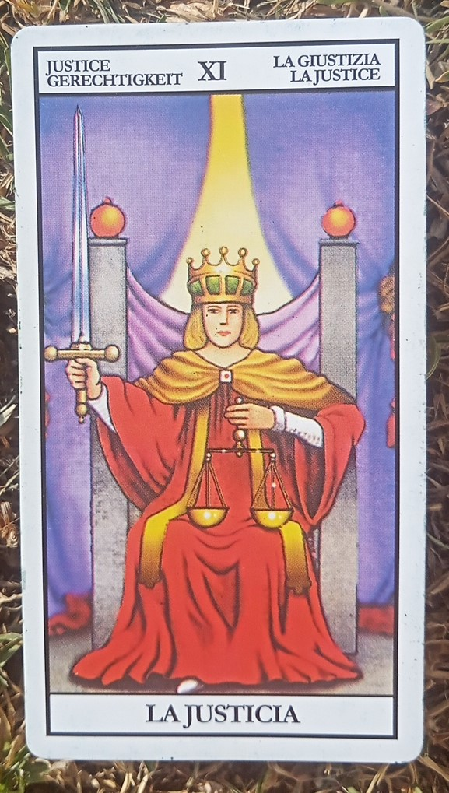

LOS SIGNOS Y SU CARTA DE TAROT
PISCIS.Siempre soñando, es obvio que les corresponde la carta de “La Luna”, ya que resuena con las emociones y sentimientos. Aporta un corazón amable y un camino luminoso. Al mismo tiempo, también, buscan desarrollar la conciencia y los instintos.
LIBRA. La carta de ”La Justicia” representa a este signo. El equilibrio es lo que aporta en lo que se da y en lo que se recibe. Representa una energía de lógica en la acción, que también otorga intuición y la misión de mejorarlo todo. Necesidad de respeto y paciencia. Pero también es una advertencia para que cambien algunas conductas negativas.

ESCORPIO. La carta de “La Muerte” representa a este signo. Renace, se transforma, resurge como el Ave Fénix y se purifica pero siempre necesitando evolucionar en su propio espacio. Escorpio se destaca por ser pasión y no le teme a nada. Por eso esta simbiosis energética es tan fuerte

CÁNCER. La carta “El Carro” es la carta que les corresponde ya que su energía es fuerte, arriesgada y llena de motivaciones. Siempre van al frente, actúan por todo pero logran el control necesario para tener triunfos en la vida. Evolucionan, se animan y ganan.
TAURO. Le corresponde la carta de “El Sumo Sacerdote”, que marca el camino del autoconocimiento y la organización desde el aspecto mental hasta el emocional. Esta carta otorga energía de mucha creatividad y positivismo. Además, un sentir especial hacia las cosas materiales pero siempre de la mano del esfuerzo por el trabajo realizado.